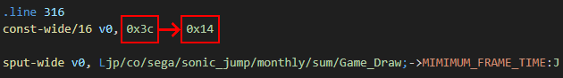
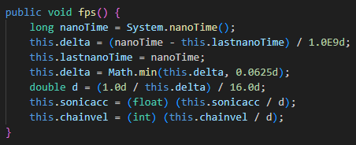
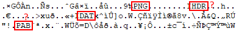

If you want to give some help for the game mod development, this page is for you!
You can check the different projects for the game mod development down below.
This task is simple: Translate the game into different languages. Because the game now features a language setting, we can add more languages in the game!
If you want to help for the translation by adding new languages, you can extract the game's APK file and verify the .json files located in the res/raw folder.
Here are the available languages in the game:
You can work on other languages of your preferences. However, some languages may only be verified by your own responsibility.
If you are interested on making new events for the game, you can make additional content for the event ideas.
In the res/drawable folder of the extracted game, you can find similar looking images with a date prefix on their name.
For example: 131073.png is the background image for Green Hill Zone, whereas 131073_dec25.png is its Christmas event version and 131073_oct31.png is its Halloween event version.
Here are the available events in the game and their date prefix:
If you want to share your event ideas or want to make other ideas for new events, you can contact Furrican via the Furrican Homepage.
DESCRIPTION:
The goal of this project is to make the Android port of Sonic Jump running at a higher frame rate. However, while this sounds simple, this task is actually too demanding to make it possible. This page explains how to make the game running smooth and why it is complicated.
Also, if you have enough experience with Java/Smali programming and would like to give some help for this project, you can contact Furrican via the Furrican Homepage.
HOW THE GAME WORKS:
First, you need to decompile the game's APK file to access the game's code. Then, search for "fps" in the Game_Draw Java file and you will stumble across a condition in the run() method.
In this condition, you can see that the fps equals 1000 divided by MIMIMUM_FRAME_TIME. If you search for MIMIMUM_FRAME_TIME, you will find out that it equals 60.
So according to the condition, the frame rate equals 1000 / 60 = 16.66666667.
Now we know that the game runs at 16.66666667fps. While you might think that the game lags so much, the game is actually desigend to run at this frame rate!
RUNNING AT 50fps:
Since we now know how the game works, all you have to know now is changing the MIMIMUM_FRAME_TIME value to increase the frame rate.
Now let's make the game running at 50fps. In Smali, find MIMIMUM_FRAME_TIME in the clinit method and replace 0x3c to 0x14. This will make MIMIMUM_FRAME_TIME to equal 20.
Once this value is changed, recompile the APK, and voila! Problem solved, right?
WRONG! As it turns out, doing so makes the game run too fast! It runs 3 times faster than it supposed to be.
SOLUTIONS IN THEORY:
The question that is actually the right one to ask is this:
How to make the game running smoother and at the right speed?
Well, here's a theory: Since the game is intentionally running at a low frame rate, we have to change all the values regarding speed, physics, gravity, time and animation frames by dividing or multiplying all those values by 3 or 4. In this way, the game will run 3 or 4 times slower at 16.66666667fps, but it will run at normal speed at 50fps or above!
You might think that this is a good news, but the problem is that this is more complicated. You see, tracking down every value regarding speed, physics, gravity, time and animation frames will take a lot of time, patience and understandings of the game's code.
Additionally, GdGohan has found a way to make the game run smoother on his side.
The way he did is by replacing the System.currentTimeMillis() function by System.nanoTime() and the fps / MIMIMUM_FRAME_TIME condition by a new method named fps().
In this method, GdGohan has opted to a nanoTime system in an attempt to make the game run smoother. And surprisingly, it works on his device! But it doesn't work on other devices, nor BlueStacks, as the game still runs too fast when this method is applied.
With all that said, if you are an experimented Java/Smali programmer, with good debugging tools if possible, you can give some help until this project is finished. In the meantime, GdGohan can take care of the issue, but it seems more complicated than expected.
DESCRIPTION:
The goal of this project is to make the Multiplayer Mode enjoyable to play by solving the canvas issue and give this game mode purpose.
In fact, the Multiplayer Mode is actually present in the game, but you have to access it via the secret cheat code. The main reason why this game mode is hidden is because of how it looks in gameplay.

As you can see, during multiplayer, there is a canvas that displays on the top-left of the screen. This canvas is the other player's screen. Obviously, this is a problem, considering that the small canvas hides a part of the main player's screen.
Here are the different solutions that we can come up with to solve the canvas issue:
SOLUTION 1 (Split screen):
The first solution would be to make each player canvas the same size by reducing the heights in half.
However, this setup is not suitable when the VIRTUAL PAD option is OFF.
SOLUTION 2 (Landscape view):
The second solution would be to make the game view landscape, so we can fit 2 canvases on the same screen.
However, like the split screen idea, this setup is not suitable when the VIRTUAL PAD option is OFF.
Also, it makes the canvas way smaller in size.
SOLUTION 3 (2 characters in the same canvas):
The better solution would be to make a function that makes the other player's character appear on one player's screen, like in most handheld multiplayer games.
But the problem is that this idea is way too complicated to make it possible.
While modding the game, you can modify sprites on sprite sheets, but you currently can't change their size and position values.
Unfortunately, the sprite size and position values aren't located in the Smali code. Instead, they are located in specific files encrypted in the .pak files (located in the "res/drawable" folder of the decompiled game).
Here is the proof: If you open a .pak file with a HEX editor and check the hex values, you can find letters that represent different file formats.
In numerous places, you can recognize the "PNG" and "DAT" format, as well as what seem to be "HDR" and "PAB" file formats.
In fact, GdGohan has already managed to extract the .png files, but not the rest. If we can extract all the remaining the files, that means we can finally access the values that determines the size and position of each sprite.
The purpose of this project is once we can fully manipulate sprite sheets, it is possible to add more playable characters, because the sprites of Sonic and Shadow are limited in terms of size on the sprite sheets.
Additionally, manipulating the sprites also allow us to fix animation issues, such as the double jump when facing left.
Notice how the double jump spin effect isn't animated correctly.